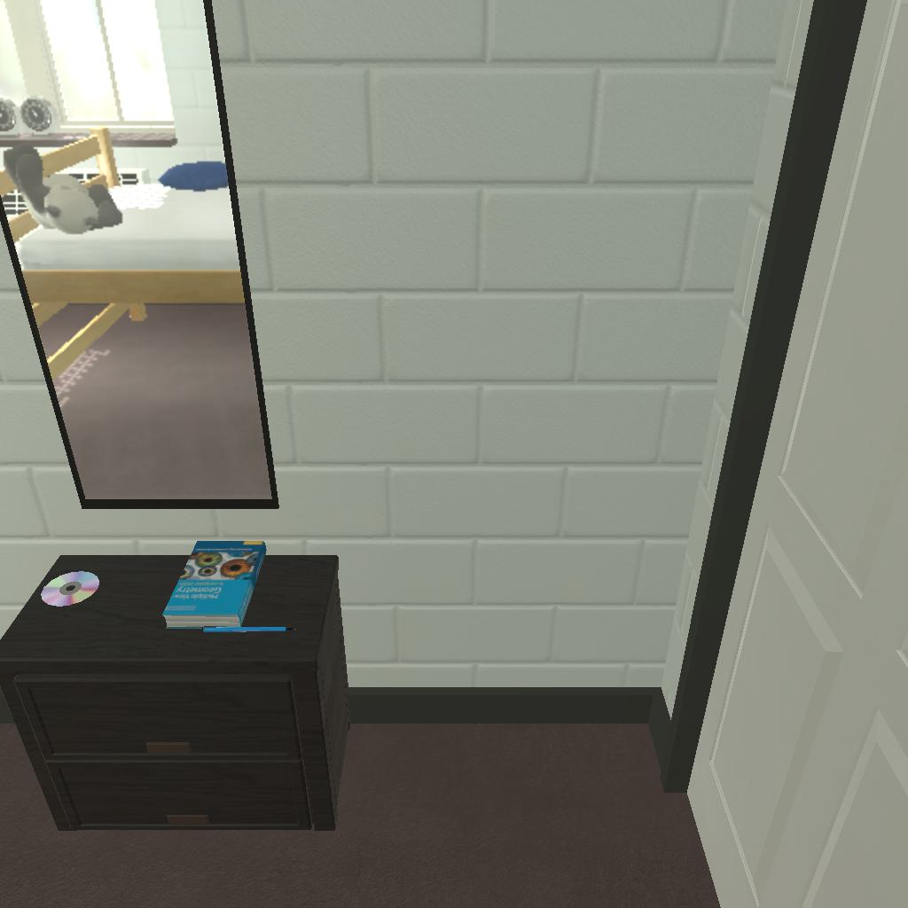

---------------------------------------------------------task: 8---------------------------------------------------------
--------------------------------------------------------------------------------------------------------------------------------------------------------------------
--------------------------------------------------------------------------------------------------------------------------------------------------------------------
Step:--------------------------------------------------------------------------2-------------------------------------------------------------------------------
----------------------------------------
VLM Prompt:
Image1:
**Instruction**
1. Analyze the provided image to identify all visible household objects, focusing on those relevant to the task description "put a laptop in desk."
2. Use the analysis of the image and the task hint "The agent must find an object of the desired type, pick it up, find the correct location to place it, and put it down there." to answer the question: what is the most reasonable action in the choices for the task description "put a laptop in desk"?
4. Decide and write the answer using the template: The answer is: (i): , where i is the real number. If there is no desired object in the image, search every place based on **Initial Observation** to find the object. And if no one is exactly correct, choose a similar answer.
**Initial Observation**
You are in the middle of a room. Looking quickly around you, you can see bed (1), garbagecan (1), desk (1), sidetable (1), drawer (1-5), laundryhamper (1)
**Answer Choices**
(1): go to bed 1
(2): go to garbagecan 1
(3): go to sidetable 1
(4): go to drawer 2
(5): go to laundryhamper 1
(6): go to drawer 3
(7): go to drawer 4
(8): go to drawer 5
(9): open drawer 1
(10): close drawer 1
(11): examine drawer 1
**Answer**
Let's think step by step by following the instructions.
----------------------------------------
----------------------------------------
Original Response:
Firstly, we analyze the image provided. We can see a sidetable with a book and a CD on it, and a mirror reflecting a bed. No laptop is visible in the image.
According to the task description "put a laptop in desk," we need to find the laptop first. The initial observation hints that there are several drawers in the room, which might be where the laptop is located.
Considering the task hint, the agent must find the object, pick it up, and then place it at the correct location. Since the image does not show a laptop, we need to search for it based on the initial observation.
Looking at the answer choices, the most reasonable action to find a laptop would be to go to or examine a drawer, as laptops are commonly stored in drawers.
Since "examine drawer 1" is an option and drawer 1 is not explicitly mentioned in the initial observation, it suggests that this is a specific drawer to be checked first.
The answer is: (11): examine drawer 1.
----------------------------------------
----------------------------------------
>>> Refine Original VLM Response and Get Pure Action: examine drawer 1
----------------------------------------
-----------------------------------------------------------------
Running time: 15.325602531433105 seconds
Total Money: 1.9745199999999998
-----------------------------------------------------------------
-----------------------------------------------------------------
Text Observation:On the drawer 1, you see a book 1, a cd 1, and a pen 2.
-----------------------------------------------------------------
UNSUCCEED